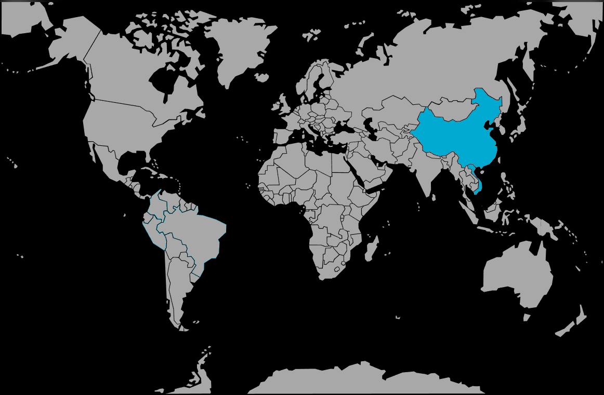

Systématique
- Ordre : Anabantiformes
- Famille : Osphronemidae
- Genre : Macropodus
- Espèce : Macropodus spechti
Macropodus spechti, le macropode noir ou poisson paradis concolore, est un gourami labyrinthidé robuste originaire du centre du Vietnam.
Les adultes mesurent en général 7–8 cm, avec un corps sombre, des reflets métalliques discrets et des nageoires allongées, plus développées et colorées chez le mâle.
Espèce territoriale au caractère affirmé, Macropodus spechti doit être maintenu dans un aquarium suffisamment grand, bien structuré avec de nombreuses cachettes et barrières visuelles.
Un couple ou un harem peut cohabiter, mais la cohabitation avec d’autres poissons doit être pensée avec soin : éviter les espèces lentes à longues nageoires et privilégier des colocataires robustes et vifs dans un volume adéquat.
Mode : constructeur de nid de bulles ; le mâle édifie un nid sous des plantes flottantes ou un support en surface, puis parade et enlace la femelle lors de la ponte.
Les œufs, plus légers que l’eau, flottent jusqu’au nid où le mâle les récupère ; après le frai, les parents peuvent souvent rester dans le bac, le mâle assurant la garde jusqu’à la nage libre des alevins, qu’il prédédate peu.
Dimorphisme sexuel : mâle plus grand, plus coloré, avec nageoires dorsale, anale et caudale nettement plus allongées ; femelle plus petite, silhouette plus trapue et couleurs plus ternes.
Espérance de vie : approximativement 8 à 10 ans en aquarium, avec une eau propre, bien oxygénée et une alimentation variée.
L’espèce occupe une grande diversité de milieux : ruisseaux collinaires, mares, marigots de grandes rivières, fossés d’irrigation et rizières, souvent peu profonds, chauds et riches en végétation.
Répartition
Origine naturelle :
- Endémique du centre du Vietnam, notamment les bassins de la rivière Thu Bồn (Quảng Nam) et de la rivière Hương / Perfume (Thừa Thiên‑Huế).
- Présent dans des ruisseaux de colline, bras morts de grandes rivières, mares, marais, petits canaux et rizières.
Ces habitats connaissent souvent de fortes variations saisonnières de niveau d’eau et de température, avec parfois des zones peu oxygénées où le labyrinthe constitue un avantage décisif.
Paramètres de maintenance
Température : 20 à 28 °C, idéalement autour de 22–26 °C.
pH : 6,5 à 8,0, eau légèrement acide à alcaline.
GH : 8 à 20 °dGH, eau moyennement dure à dure.
Courant : faible à modéré ; prévoir une bonne filtration mais sans courant excessif, avec zones calmes et végétation de surface.
Volume conseillé : au minimum 140–200 L pour un couple ou un petit groupe, avec une grande longueur de façade pour permettre l’établissement de territoires distincts.
Régime alimentaire
Régime : omnivore à forte tendance carnivore ; se nourrit en nature de larves d’insectes, petits invertébrés et divers organismes aquatiques.
En aquarium, proposer une base de proies vivantes ou congelées (artémias, daphnies, vers, larves de moustique) complétée par des granulés et paillettes de bonne qualité ; une alimentation riche en protéines soutient sa vitalité et la reproduction.